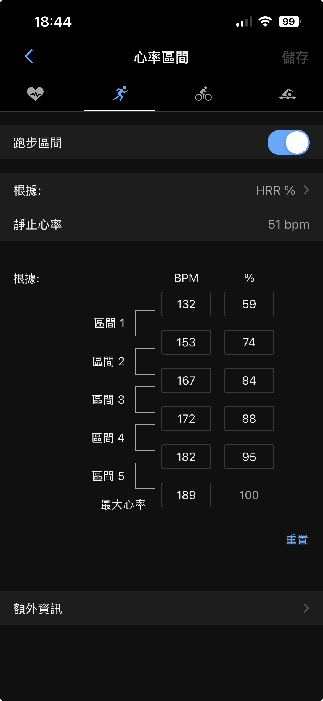
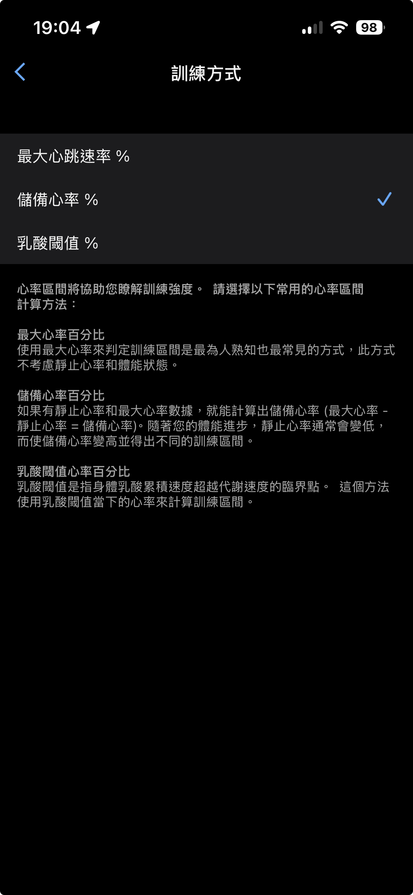
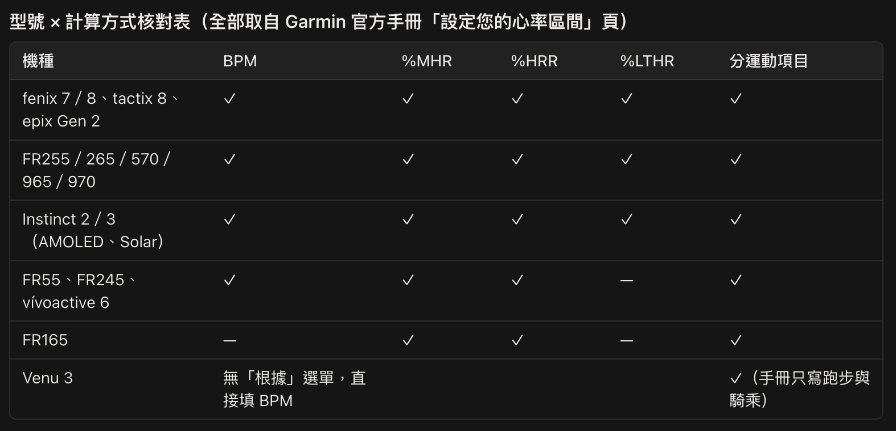

心率區間設好了，錶為什麼還一直警示？｜Garmin、COROS、Amazfit、小米怎麼設
因為碰到類似問題的學員與跑者太多了，所以用這篇文章來說明 Garmin、COROS、Amazfit、小米的心率區間設定細節。
在我主導的實體訓練營中，先修課第一天我一定會做兩件事：
❶ 測量站姿安靜心率＋❷ 測量跑步最大心率。
依過去經驗，這兩個個人化數字找到了、也在 RQ 上填好了，課表上的心率區間都沒問題，也上傳到跑錶了，但實際進行訓練時，明明跑在課表的區間內，但跑錶還是會一直警示。
原因多半是填到了錯的位置：Garmin 的心率區間是按運動項目分開的。見附圖，「心率區間」這一頁的最上方有一排四個圖示，由左到右依序是通用（心形中間有一條心跳波形線）、跑步（跑者小人）、騎車（自行車）、游泳（泳者）；點到哪一個，那個圖示就會變成藍色，下方也會多一條底線。附圖裡選到的正是第二個跑者小人，所以下方顯示的是「跑步區間」。只在「通用（心形）」那一層把區間改好，跑步時錶讀到的還是「跑步」那一組。

（附圖是另一位跑者的設定畫面，最大心率與靜止心率跟下面提到的那位學員不同，看的重點在最上面那一排圖示選在哪一個。）
先修課結束後，就有一位學員傳訊息來問我：她已經在 RQ 上把最大心率填成 185、站姿安靜心率填成 56，區間也照著設好了，但一跑起來，錶還是一直震動警示。兩個數字都是對的，只是她設在「通用」，還沒進到錶裡面「跑步」的設定中。
▎Garmin 的心率區間分為通用、跑步、騎車、游泳
這是最容易漏掉的一步。
Garmin 的心率區間分成「通用」與「運動」兩層，運動那一層再依跑步、自行車、游泳各自獨立。只改了通用那一層，跑步時讀到的可能還是舊的那一組，App 上的設定位置在：
▹ Garmin Connect App → 裝置 → 你的錶 → 使用者資訊 → 心率與功率區間 → 心率 → 運動心率 → 跑步
進到「跑步」這一頁之後，第一件要做的事是確認最上面那個「跑步區間」的開關已經打開（見附圖，打開時開關會亮成藍色）。這個開關沒有打開，底下填的數字就不會生效，跑起來錶讀到的還是通用那一組。
到了這裡還有一個選項要設定，就是計算方式。點進「根據」這一欄，頁面的標題會變成「訓練方式」，裡面提供三種：
❶ 最大心跳速率 %
❷ 儲備心率 %
❸ 乳酸閾值 %
（我手上這支是 iOS 版的 Garmin Connect，Android 版的選項與用詞也許會有出入）

在訓練營和 KFCS 的訓練體系中，我們選用的是「儲備心率 %」，也就是 %HRR。選錯了，同一組百分比會被換算成完全不同的心率數字，區間看起來有設，其實是錯的。
請在選好之後退回上一頁，「根據」那一欄會顯示成 HRR %（見附圖），那才算是設定好了。
接著填入最大心率與安靜心率，再把各區的下限百分比填進去。KFCS 系統用 HRR% 中的區間分界是使用下面的數值：
▹ 心率 5 區的下限 95%
▹ 心率 4 區的下限 88%
▹ 心率 3 區的下限 84%
▹ 心率 2 區的下限 74%
▹ 心率 1 區的下限 59%
最上緣的 100% 是 5 區的上限，系統通常會自動帶入。
▎哪些 Garmin 錶可以分運動項目設定？
以上講的是手機 App 這一端。如果你習慣直接在錶上設，選項會再多一個 BPM，各機種給的也不一樣。
我把手邊查得到的官方手冊翻過一遍，結論是：分運動項目這件事，Garmin 現行的機種幾乎都做得到，從入門款到旗艦款都有。官方明確寫著可以分別為不同的運動設定各自心率區間的，至少包括：
▹ Forerunner 系列：55、165、245、255、265、570、965、970
▹ fenix 系列：fenix 7、fenix 8（同基底的 tactix 8 也有）
▹ epix（Gen 2）
▹ Instinct 系列：Instinct 2、Instinct 3
▹ Venu 3
▹ vívoactive 6
幾乎所有的型號都可以，所以「我的 Garmin 錶有沒有這個功能」通常不是問題。真正要確認的是另一件事：計算方式能不能選到儲備心率百分比（HRR%）。這一點各機種差很多，大致分成三種情況：
❶ 下面型號四種計算方式全給
fenix 7、fenix 8、tactix 8、epix（Gen 2）、Forerunner 255、265、570、965、970、Instinct 2、Instinct 3 這些機種，BPM、%MHR、%HRR、%LTHR 四種都能選。
❷ 下面型號少了乳酸閾值 % 那一項，%HRR 還在
Forerunner 55、Forerunner 165、Forerunner 245、vívoactive 6 屬於這一類，手冊上只列到 BPM、%MHR、%HRR（Forerunner 165 連 BPM 都沒有，只剩兩種百分比）。然而，這對我開的課表來說沒差，因為我只需要 %HRR。
❸ 有分運動項目，卻沒有計算方式可選
Venu 3 是這一類。手冊裡找不到「區間 → 根據」這一步，填區間時只能直接填心跳數。這種錶要自己先把百分比換算成心跳數再填進去。以最大心率 185、站姿安靜心率 56 為例，儲備心率是 129，心率 1 區的下限 59% 換算後是 132，往上各區依此類推。
另外，Forerunner 55 的中文手冊寫的是「跑步與騎乘各有獨立的心率區間」，沒有提到游泳；但 Garmin 論壇上有使用者回報，韌體 4.11 時錶上其實能個別設定跑步、游泳、騎乘三種，升級到 5.07 之後反而只剩跑步一種可以設定（討論串見文末參考資料）。手冊與實機對不上，而且會隨韌體版本變動。我手邊沒有這支錶可以實測，如果你正在用 Forerunner 55，歡迎留言告訴我你錶上目前實際看到的選項，我再回頭把這段補齊。
下面這張表是我逐一核對官方手冊後整理的結果，可以直接對照自己那一款：

▎「靜止心率」那一欄，錶自己填的數字跟我們要的不同
Garmin 的「靜止心率」預設會用手錶自己量到的平均值，而那個數字通常來自睡眠期間的低點，可能是 48。
KFCS 系統建議使用的是「站姿安靜心率」，同一個人的躺姿若是 48，站姿可能是 58。
差 10 下聽起來不多，代入儲備心率法之後差別就出來了。以最大心率 185 為例：
▹ 用站姿的 58：儲備心率是 127，心率 1 區的下限落在 133
▹ 用躺姿的 48：儲備心率是 137，心率 1 區的下限落在 129
所有區間的邊界一起往下移，同一個心率會被當作更高的強度區間。跑者會以為自己練得比課表更重，錶也會更頻繁地跳警示。這是跑者需要特別注意的地方。
跑步是站著進行的運動，儲備心率的起點就該用站著量到的數字。所以這一欄要改成「設定自訂」，把自己實測的站姿安靜心率填進去。
▎有些錶不能在錶上設，有些錶連計算方式都改不了
▹ COROS：可以設，而且很簡單。App 裡的路徑是：Profile → Settings → Heart Rate Zone → Zone Types → 選「Heart Rate Reserve Zone」
選好之後填入安靜心率與最大心率就完成了。
▹ Amazfit：錶上不能設，要用手機。錶上顯示的是系統自動算的六個區間，它是用「220 減年齡」估最大心率，再以最大心率的百分比切分（放鬆低於 50%、熱身 50~60%、燃脂 60~70%、有氧 70~80%、無氧 80~90%、最大攝氧量高於 90%）。
它用的計算基準跟儲備心率法完全不同，我會建議要調整。調整的地方在手機的 Zepp App：Profile → Workout settings → Heart Rate Zones
它支援手動輸入實測最大心率，也支援儲備心率與自訂邊界。但這裡只有一組區間，不像 Garmin 分運動項目——騎車跟跑步共用同一套設定，這點也要留意。
▹ 小米：最大心率可以自己填，但計算方式改不了。填的位置在手機的小米運動健康 App（國際版名為 Mi Fitness）：
▹ 個人資訊 → 心率區間 → 關閉自動計算 → 填入最大心率（能改的就到這裡為止）
區間一律照最大心率的百分比切，官方英文版的名稱與範圍是：Light 50~60%、Intensive 61~70%、Aerobic 71~80%、Anaerobic 81~90%、VO₂ max 91~100%，低於最大心率 50% 的部分不計入任何區間，沒有儲備心率法可以選。
另外提醒一個容易混淆的地方：舊的「小米運動」App 已經改名為 Zepp Life，跟 Amazfit 用的 Zepp App 是同一家公司的兩支不同 App。小米手環 8 以後的機種不支援 Zepp Life 綁定，要用小米運動健康。
心率區間看起來只是一個技術設定，實際上它是個人化強度判斷的基準線，也是 RQ 上訓練指數、體能指數、疲勞指數、狀況指數的原始資料來源。基準線偏了，之後每一次的「課表強度」以及「跑力計算」、「訓練負荷」與「體能、疲勞、狀況」等計算都會跟著偏，而且它不容易察覺，因為錶上的數字看起來一切正常。但在懂了上述的邏輯後，就會知道這個設定有多重要！而且一定要手動設，建議不要用自動偵測模式去取得數值。
最後，先簡單說一句：若打算買新跑錶或打算換錶的人，強烈建議選購 Garmin，請不要去買 COROS、Amazfit 或 小米，至於原因，後續有時間再另外撰文說明。
📚 參考資料
▹ Garmin. (n.d.). 設定您的心率區間. FORERUNNER 570 系列 使用者手冊. 連結
▹ Garmin. (n.d.). 設定您的心率區間. FORERUNNER 970 使用者手冊. 連結
▹ Garmin. (n.d.). 設定您的心率區間. FĒNIX 7 SERIES 使用者手冊. 連結
▹ Garmin. (n.d.). 設定您的心率區間. FORERUNNER 165 系列 使用者手冊. 連結
▹ Garmin. (n.d.). 設定心率區間. FORERUNNER 55 使用者手冊. 連結
▹ Garmin. (n.d.). 設定您的心率區間. VÍVOACTIVE 6 使用者手冊. 連結
▹ Garmin. (n.d.). Setting Your Heart Rate Zones. Venu 3 Series Owner's Manual. 連結
▹ 其餘機種可到 Garmin 官方手冊網站，用「設定您的心率區間」查自己那一款。
▹ Garmin Forums. (n.d.). Sport Heart Rate Zones for cycling and swimming missing? Forerunner 55 Series - Running/Multisport. 連結
▹ COROS. (n.d.). Setting Resting and Max Heart Rate Data. COROS Help Center. 連結
▹ Amazfit. (n.d.). How are the heart rate zones divided while running with the watch? Amazfit Support. 連結
▹ Xiaomi. (n.d.). What is the heart rate zone? Xiaomi UK Support. 連結
▹ Xiaomi. (n.d.). What is the Heart rate data in the Mi Fitness app? Xiaomi Global Support. 連結